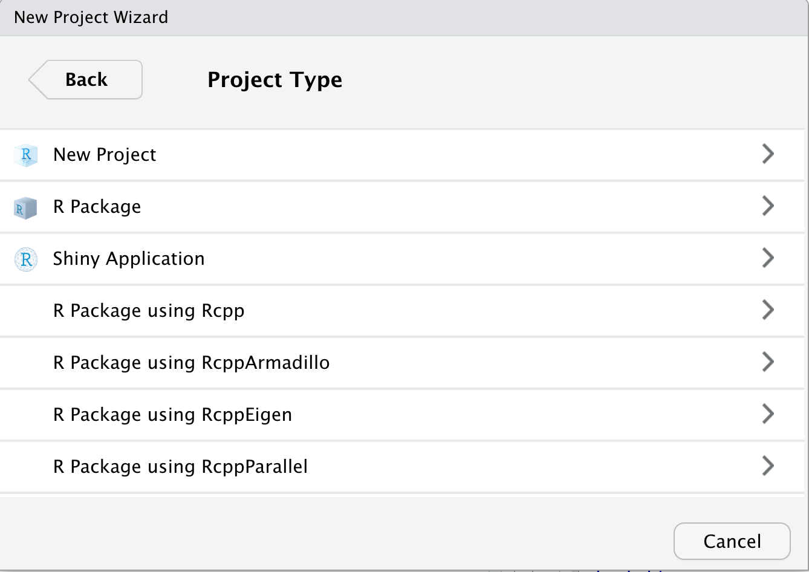

Lab 3 - Data handling, validation and manipulation in R
Objectives
- Get started with project organization in R studio
- Familiarize with the R studio interface and basic R syntaxt
- Conduct advanced data handling, validation, and manipulation
- Compute summary statistics with data
- Introduction to visualization of data
I: Setting up your environment
The Rstudio interface
When we start R studio, we can see 4 sections:
- Source (top left), here we have our code editor and other files. We will use this section to edit and view our scripts and other documents we will be using to interact with R.
- Console and Terminal (bottom left), this is where
the code is executed (Console will execute R code and
Terminal other code for your operating system). We can directly
write the code here, but normally we will be using the other source
files such as .R or .Rmd to write our code which then will be send
here.
- Environment, History and others (top right), Environment will list all the objects you create and History will have the code you sent to the console. There are other tabs in this section which we wont be using for now.
- Files, Packages and Help (bottom right). This section includes a file browser, and other tabs for package management and help.

Organizing your projects
One of the most useful features of R studio is the project
organization, if you haven, I strongly encourage you to familiarize with
creating and using projects to organize your workflow. Projects allow to
create a file that will contain all the information regarding your
session (including objects, data sets and configurations) and organize
your files in folders in your system. This is particularly useful when
we are working with multiple topics.
When you open Rstudio for the first time it starts on an empty project.
To create a new project, just go to the top right corner menu and select
New Project…

Then will five you the option to create a new project in a new directory, un an existing directory or version control. For today, we wont be talking about version control in detail, but this is to integrate Rstudio with Github.

Once you have selected the option that you want, it will show you multiple options for types of projects, you can select New project and continue.

Then you just name your directory and select a location.

Once the project is created, in the files tab you will see that Rstudio created the files for your project in the folder that you selected. The project organization depends on your personal preferences, but I usually like to create 3 folders (code, data and docs) to organize my files related with the current project.

Intro to Markdown

R studio can create several types of documents including: R scripts, text files, Markdown, among others. To create a new document you can go to the menu located at the upper left corner.
A menu will show with all the different document types you can create. For now we will select the option R Markdown….
It might ask you to install a library if it’s not already installed, so just click yes if it does. This will open a window where will ask for a title, author, date, and some options for the type of output of the document. Add your name and select the render format to word (this can be changed later).

Documents with R Markdown (.Rmd)
We created our first document with R Markdown, and will look like this:

The document has already the header and a code ‘chunk’ (we will talk more about this later). Add a title for the document and put your name in the author field. The Rmd documents use a syntax called markdown which we will not cover in detail, but you can find more info in this link. You can edit the document directly with the Rmd syntax, but if you prefer to save some time and don’t have to deal with learning everything from scratch, there is an option to edit the document in a more familiar way. To do this just change the option located in the top right of the document from Source to Visual. You will notice that a toolbar with some familiar icons appeared at the top.

To add a new section to the document, you might want to start with a
title. The titles can be hierarchical similar to what we are used in
other text editors (Title, Subtitle 1, Subtitle 2, etc…). To define a
new title we use the character # in front of the text, and
the number of # before the text will be the hierarchy
level. For example if we want to define a title hierarchy we write:
# Title 1
## Subtitle 1
### Subtitle 2Which in our visual and rendered document will look like this:

Navigating the document
Having defined sections in our document is nice because we can
quickly jump between them. There are 2 ways of quickly navigating
between sections: the outline right bar and the bottom
outline menu. If your right outline bar is collapsed, make sure to
click on the outline icon 

You will notice that the bottom outline has a few extra sections labeled Chunk. A chunk refers to a piece of code in the document. This piece of code will execute (unless you specify the opposite) every time that you document renders. Each document is self contained which means taht all the objects and functions you use must be declared and loaded in order for the document to render properly (we will talk more about this later).
Rendering the document
Now that we have a document we are going to render it to different
formats. To render the document you can either click on the
knit icon  , or use the shortcut
, or use the shortcut ctrl+shift+k.
The default format that the document will be rendered is html, but you
can choose different formats from the dropdown menu.

II: Getting started
Objects in R
R is an object
oriented programming environment, which means that we store the
information in variables called objects. To create a new object we use
the assign operator, <- or =. For
example:
# we will create an object called "num" that contains the value 10
num <- 10When creating an object, we will not see any outputs. If we want to see what is inside an object, we have to print the object by typing it on the console.
# This will print the information stored in the object
num## [1] 10Storing multiple elements
We can store more than one element inside an object. This can be arranged in multiple structures. The most simple is a vector of values. For example:
# Store multiple elements inside a vector
numbers <- c(10, 40, 25, 3)
# Examine the result
numbers## [1] 10 40 25 3Subsetting objects
We can select specific elements inside our objects. For this we can
use indexing by position and use the operatoors [ ]. For
example:
# We can ask for the third element of our object values
numbers[3]## [1] 25Boolean logic
Other important concept in programming is Boolean logic. Boolean
logic is a conditional statement with two possible outcomes:
TRUE or FALSE, this is used a lot for
decisions and controlling the flow of a program. The basic operators we
use for this in R are:
- Equal to (
==) - And (
&) - Or (
|) - Not (
!) - greater (
>) or less (<) than
This operators can be combined. For example, if we want to make a
statement about a variable x not equals to variable
y, we can us the operator != to define the
statement. In the following example we compare the 2 values to evaluate
if they are the same:
test <- numbers[1] == numbers[2]
test## [1] FALSEFunctions
R has a lot of base functions, but we can define new functions. When
using R studio, the key Tab will help us to auto complete, this
can help us a lot when we don’t remember the exact name of the functions
available. The best part of programming with R is that it has a very
active community. Since its open source, anyone can create functions and
compile them in a package (or library). we can download these packages
and access new functions.
Functions in R require arguments, which we can see in the function
documentation or if we press the key Tab when we are inside the
function.
# To get the sum of a vector of numbers inside an object we use sum()
sum(numbers)## [1] 78We can put functions inside function, for example, to get \(\sqrt{\sum_1^n x}\) the square root of a sum of the numbers in x we can use:
sqrt(sum(numbers))## [1] 8.831761You can find the documentation regarding the functions, including the
arguments (expected inputs) and outputs generated, typing in the R
console the operator ? followed by the name of the
function.
Introducing the pipes
The library dplyr has several functions that can help to
clean, create new variables, and modify our data in other ways.
# if we dont have installed the library we will need to install it using:
# install.packages("dplyr")
# we load the library:
library(dplyr)dplyr introduces a new operator called pipes
(%>%), which can connect several functions to an object.
This is an alternative to write several functions in a single “line of
code” in a more organized way. For example, if we want to execute a
function F1() followed by another function
F2() for the object x:
F2(F1(x)) is equivalent to
x %>% F1() %>% F2()
As you can notice, to read the code F2(F1(x)) we have to
go from the inside to the outside to see the order of execution of the
functions, but when we read x %>% F1() %>% F2() we
read from left to right, which is the same way we normally would read
any text in western language.
Suggestion: we can use the keys Ctrl +
shift + m to insert the %>%
operator.
# We previously used this code to calculate the square root of the sum of x
sqrt(sum(numbers))## [1] 8.831761Using the pipes we can do the same more organized, by writing the order of execution from left to right.
numbers %>% # First we call the data
sum() %>% # Sum all the values
sqrt() # Compute the square root## [1] 8.831761You will notice that the outputs are exactly the same. Feel free to use whatever syntax you prefer, but for this course we will use mostly the pipes and writing the code from left to right.
III: Data manipulation
Now we will import some data into R, here is where the project organization becomes handy… To import the data into R we need to know the location in our computer, and specify the path to the file. For example, I have the file located in a directory called data.
# Import the data
dat <- read.csv(file = "data/dataTb.csv")
# With the function head() we can see the first n observations of our data.frame
head(x = dat, n = 5)## ID_farm Mun Com Census Prev Incid Xcoor Ycoor Type MOV_year
## 1 1 GUADALMEZ ALMADEN 14 1.04 1 325389.1 4289645 BEEF 0.00
## 2 2 GUADALMEZ ALMADEN 200 0.00 0 327652.2 4291586 BEEF 3.00
## 3 3 GUADALMEZ ALMADEN 38 0.00 0 329353.2 4294230 BEEF 0.50
## 4 4 GUADALMEZ ALMADEN 70 0.00 0 328481.2 4287725 BEEF 0.83
## 5 5 GUADALMEZ ALMADEN 95 0.56 1 326659.1 4286466 BEEF 0.50
## MOV_cen ANIM_mov goat sheep pig MEANfenced
## 1 0.00 0 0 0 0 0
## 2 1.50 119 0 0 0 0
## 3 1.33 14 0 0 0 0
## 4 1.20 5 0 1 0 0
## 5 0.53 26 0 1 0 0Examining the data
We can examine the structure of our data with the function
str(). This will show us the dimensions of our table, the
name of the variables, type and the first values for each column.
str(dat)## 'data.frame': 766 obs. of 16 variables:
## $ ID_farm : int 1 2 3 4 5 6 7 8 9 10 ...
## $ Mun : chr "GUADALMEZ" "GUADALMEZ" "GUADALMEZ" "GUADALMEZ" ...
## $ Com : chr "ALMADEN" "ALMADEN" "ALMADEN" "ALMADEN" ...
## $ Census : int 14 200 38 70 95 19 115 150 137 84 ...
## $ Prev : num 1.04 0 0 0 0.56 0 0 0 0.77 0 ...
## $ Incid : int 1 0 0 0 1 0 0 0 0 0 ...
## $ Xcoor : num 325389 327652 329353 328481 326659 ...
## $ Ycoor : num 4289645 4291586 4294230 4287725 4286466 ...
## $ Type : chr "BEEF" "BEEF" "BEEF" "BEEF" ...
## $ MOV_year : num 0 3 0.5 0.83 0.5 1.33 0.83 0.33 0.17 0.33 ...
## $ MOV_cen : num 0 1.5 1.33 1.2 0.53 7.02 0.72 0.22 0.12 0.4 ...
## $ ANIM_mov : int 0 119 14 5 26 21 11 12 1 4 ...
## $ goat : int 0 0 0 0 0 0 0 0 0 0 ...
## $ sheep : int 0 0 0 1 1 0 1 1 1 0 ...
## $ pig : int 0 0 0 0 0 0 0 0 0 0 ...
## $ MEANfenced: num 0 0 0 0 0 0 0 0 0 0 ...We can subset specific rows and columns of our data. If you remember,
we previously used the operator []. Since our object
containing the data is a data.frame and has named columns, we can use
the operator $, that is used to subset named elements of an
object. For example:
# Subset the first 5 observations of the col Mun
dat$Mun[1:5]## [1] "GUADALMEZ" "GUADALMEZ" "GUADALMEZ" "GUADALMEZ" "GUADALMEZ"So far, we have used only base R to manipulate our data. In the next
section, we will use the library dplyr, which several
provides functions for data manipulation.
Data reduction
Subsetting columns
The function select() can be used to pick variables
based on their names. For example
# Here we select only the variables Mun, Census, and Prev
dat %>% # This is the name of out table
select(Mun, Census, Prev) # we define the columns we want## Mun Census Prev
## 1 GUADALMEZ 14 1.04
## 2 GUADALMEZ 200 0.00
## 3 GUADALMEZ 38 0.00
## 4 GUADALMEZ 70 0.00
## 5 GUADALMEZ 95 0.56
## 6 GUADALMEZ 19 0.00Subsetting rows
dplyr has two main functions to subset rows: slice() and
filter(). slice() will subset the rows based
on their index. For example, if we want the rows 1 to 10:
dat %>%
slice(1:10)## ID_farm Mun Com Census Prev Incid Xcoor Ycoor Type MOV_year
## 1 1 GUADALMEZ ALMADEN 14 1.04 1 325389.1 4289645 BEEF 0.00
## 2 2 GUADALMEZ ALMADEN 200 0.00 0 327652.2 4291586 BEEF 3.00
## 3 3 GUADALMEZ ALMADEN 38 0.00 0 329353.2 4294230 BEEF 0.50
## 4 4 GUADALMEZ ALMADEN 70 0.00 0 328481.2 4287725 BEEF 0.83
## 5 5 GUADALMEZ ALMADEN 95 0.56 1 326659.1 4286466 BEEF 0.50
## 6 6 GUADALMEZ ALMADEN 19 0.00 0 327837.3 4289723 BEEF 1.33
## 7 7 GUADALMEZ ALMADEN 115 0.00 0 328840.3 4289479 BEEF 0.83
## 8 8 GUADALMEZ ALMADEN 150 0.00 0 332923.8 4288009 BEEF 0.33
## 9 9 CHILLON ALMADEN 137 0.77 0 332801.4 4302796 BEEF 0.17
## 10 10 AGUDO ALMADEN 84 0.00 0 334418.9 4318039 BEEF 0.33
## MOV_cen ANIM_mov goat sheep pig MEANfenced
## 1 0.00 0 0 0 0 0
## 2 1.50 119 0 0 0 0
## 3 1.33 14 0 0 0 0
## 4 1.20 5 0 1 0 0
## 5 0.53 26 0 1 0 0
## 6 7.02 21 0 0 0 0
## 7 0.72 11 0 1 0 0
## 8 0.22 12 0 1 0 0
## 9 0.12 1 0 1 0 0
## 10 0.40 4 0 0 0 0Since the rows are not named, we use their indices, which is not very useful.
A more useful way to select rows, would be based on conditions, for this we can use our previous knowledge on boolean logic. For example, if we want to create a subset of all the beef farms we use:
beefFarms <- dat %>%
filter(Type == "BEEF")
head(beefFarms)## ID_farm Mun Com Census Prev Incid Xcoor Ycoor Type MOV_year
## 1 1 GUADALMEZ ALMADEN 14 1.04 1 325389.1 4289645 BEEF 0.00
## 2 2 GUADALMEZ ALMADEN 200 0.00 0 327652.2 4291586 BEEF 3.00
## 3 3 GUADALMEZ ALMADEN 38 0.00 0 329353.2 4294230 BEEF 0.50
## 4 4 GUADALMEZ ALMADEN 70 0.00 0 328481.2 4287725 BEEF 0.83
## 5 5 GUADALMEZ ALMADEN 95 0.56 1 326659.1 4286466 BEEF 0.50
## 6 6 GUADALMEZ ALMADEN 19 0.00 0 327837.3 4289723 BEEF 1.33
## MOV_cen ANIM_mov goat sheep pig MEANfenced
## 1 0.00 0 0 0 0 0
## 2 1.50 119 0 0 0 0
## 3 1.33 14 0 0 0 0
## 4 1.20 5 0 1 0 0
## 5 0.53 26 0 1 0 0
## 6 7.02 21 0 0 0 0Creating new variables
Often times we will need to create new variables based on the
information we have. In the following example, we will use the function
mutate() to create a new categorical variable for the size
of the farm based on the census recorded. Notice that we use the
function cut() to create the
# Create new variable for farm size
dat <- dat %>% # this is the data used
mutate( # We use the function mutate for creating new variables
# We will use the function cut() for categorization
farmSize = cut(
Census, # Name of the variable used for categorization
breaks = c(0, 50, 200, 10e3), # Breaks used to create the categories
labels = c("small", "medium", "large") # Names for each of the categories
)
)
# print the first observations
head(dat) ## ID_farm Mun Com Census Prev Incid Xcoor Ycoor Type MOV_year
## 1 1 GUADALMEZ ALMADEN 14 1.04 1 325389.1 4289645 BEEF 0.00
## 2 2 GUADALMEZ ALMADEN 200 0.00 0 327652.2 4291586 BEEF 3.00
## 3 3 GUADALMEZ ALMADEN 38 0.00 0 329353.2 4294230 BEEF 0.50
## 4 4 GUADALMEZ ALMADEN 70 0.00 0 328481.2 4287725 BEEF 0.83
## 5 5 GUADALMEZ ALMADEN 95 0.56 1 326659.1 4286466 BEEF 0.50
## 6 6 GUADALMEZ ALMADEN 19 0.00 0 327837.3 4289723 BEEF 1.33
## MOV_cen ANIM_mov goat sheep pig MEANfenced farmSize
## 1 0.00 0 0 0 0 0 small
## 2 1.50 119 0 0 0 0 medium
## 3 1.33 14 0 0 0 0 small
## 4 1.20 5 0 1 0 0 medium
## 5 0.53 26 0 1 0 0 medium
## 6 7.02 21 0 0 0 0 smallSummarizing the data
Number of observations
There are multiple ways to obtain summaries by groups in R. The most
basic is counting the number of observations for each category of a
variable. For example, we use the function count() to count
the number of farms for each of the categories we just created:
dat %>%
count(farmSize)## farmSize n
## 1 small 300
## 2 medium 367
## 3 large 99We can add multiple variables to count the number of observations for each of the combinations between levels. For example:
dat %>%
count(farmSize, Type)## farmSize Type n
## 1 small BEEF 241
## 2 small DAIRY 59
## 3 medium BEEF 346
## 4 medium DAIRY 21
## 5 large BEEF 96
## 6 large DAIRY 3Other summary statistics
We can also compute other summary statistics such as median, mean, standard deviation, or any other function in R. For example:
dat %>%
group_by(farmSize) %>% # We group by farm size
# we use the function summarise to get the summary statistics
summarise(
count = n(), # we use the function n() to get the counts
medianPrev = median(Prev), # mean() to get the mean
maxPrev = max(Prev) # sd() for the standard deviation
)## # A tibble: 3 × 4
## farmSize count medianPrev maxPrev
## <fct> <int> <dbl> <dbl>
## 1 small 300 0 16.7
## 2 medium 367 0 14.2
## 3 large 99 0 12.4The functions mutate and summarise in
dplyr have some variants that allow to do multiple
operation for multiple variables, which makes the manipulation more
flexible. For example if we want to calculate the standard deviation and
mean for multiple variables, we can use:
dat %>%
group_by(farmSize) %>%
summarise_at( # Notice that we use the function `summarise_at()` this time
vars(Prev, ANIM_mov), # first we specify the names of the columns
list(median = ~median(.), max_value = ~max(.), count = ~n()) # Then we specify the functions we want to use
)## # A tibble: 3 × 7
## farmSize Prev_median ANIM_mov_median Prev_max_value ANIM_mov_max_value
## <fct> <dbl> <dbl> <dbl> <int>
## 1 small 0 2 16.7 556
## 2 medium 0 9 14.2 586
## 3 large 0 21 12.4 1154
## # ℹ 2 more variables: Prev_count <int>, ANIM_mov_count <int>IV: A glimpse into data visualization
To finalize this lab, we will do a little glimpse into data visualization. For today we will keep it simple and just use the base R functions.
The choice of which type of figure we will use will depend on the type of variables we are using.
For example, to visualize continuous distributions we can use a histogram
hist(dat$Prev)If we want to plot two continuous variables we can use a scatter plot:
plot(dat$Census, dat$Prev)If we want to visualize the relationship between a categoricla and a continous variable we can use a boxplot:
boxplot(dat$Prev~dat$farmSize)Next week we will go more in detail into how to make our figures pretty ✨
QUESTIONS
Render the document using the Rmd engine and submit your responses as a word document or pdf. DO NOT SUBMIT IT AS A HTML or Rmd.
How many rows and columns do you have in the dataset “dataTB.csv”? Using R, provide a table displaying the information contained in the 10 first rows of the six first columns.
Provide a table of the beef farms where the number of movements are more than 500, only including the columns: ID_farm, Mun, Com, Census and ANIM_mov
Provide a table summarizing the count, median, and maximum values of the TB prevalence by county (Com)
Bonus: Create a boxplot displaying the TB prevalence by county.